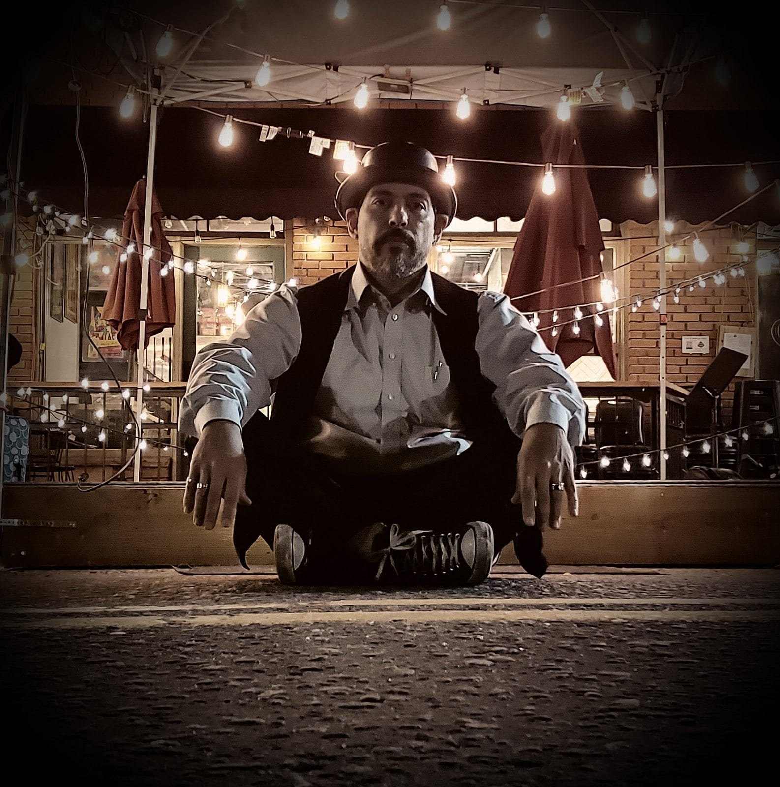

In the Colorado mountains
Live music for Breckenridge corporate retreats at 9,600 feet
You’ve reminded everyone to drink extra water in Breckenridge, and now it’s time to plan the evenings. Breckenridge is the highest town we travel to for events, and we’ll plan around that for your welcome night, your dinners and your party, whether you’d like a solo musician or a quartet.
It’s a town that has been entertaining people at altitude for a hundred and fifty years, and its venues have real character. Want to see how we work in the mountains? Head to our corporate retreats page, or browse these eight corporate retreat evening ideas, which include the size of band each one needs.
The look
Live music in Breckenridge
Here’s one of our artists on a patio, along with the kind of covered stage we can use if your event moves outside.


9,600 feet
What the altitude changes.
Singers and horn players tire faster in thin, dry air, so we’ll plan real breaks between sets and keep music playing through them.
Temperatures can swing a lot up there between the sound check and the last set, and that can pull instruments out of tune. So we’ll plan a longer sound check than we would in Denver, and the band will retune between sets.
Carrying gear is slower work at this altitude, too, so we’ll give the band extra time to set up.
Distilleries, lodges & resorts
Breckenridge venues.
Breckenridge centers on its historic core, and the event venues sit around it. The Breckenridge Distillery hosts dinners at the north end of town, and The Lodge at Breckenridge sits on the ridge above it. Beaver Run Resort and Gravity Haus are at the base, and they’re both great for conferences and ballroom events. A distillery dinner and a big awards night are very different events, so let us know what you’re planning and we’ll suggest the right size of band.
Ten Mile Station sits mid-mountain, and in winter the band’s gear has to reach it over snow on the venue’s schedule. We’ll work that out with your venue ahead of time, the same way we do at the on-mountain venues in Beaver Creek.
Tejas Singh is a great choice if you’d like one act throughout, since he can start as a duo at dinner and finish as a quartet on the dance floor. For a dinner with no dancing, a jazz duo of upright bass and guitar can play the whole meal at a level that’s easy to talk over.
Breckenridge noise limits & curfews
Breckenridge’s reported noise limits are different for residential and commercial zones, and the town manager can allow more. So the venue’s number is the one that matters, and we ask for it when you book. You’ll find the reported numbers on our mountain corridor page.
A town’s limit is measured at the property line, so the distance between the band and that line decides how loud the music can be. That’s why your venue’s name is the first thing we’ll ask for. Let us know your curfew when you book, and we’ll plan the song list around it.
The drive
Planning live music in Breckenridge
A Breckenridge event takes a bit more planning than a Denver one, mostly because of the drive and the longer working day.
The drive from Denver goes up I-70 into the mountains, so we’ll plan the band’s travel around your event.
We also love playing milestone birthdays, anniversaries and family gatherings at these venues. Take a look at our private parties page for more ideas, or our cost guide if you’re curious about prices around Colorado.
What clients say
“Their combination of upright bass and guitar brought an effortless sophistication and warmth to the evening. Their musicianship was truly outstanding. Elegant and refined. They have a remarkable ability to enhance the atmosphere without overpowering it...”
“Hired this musician for our office happy hour and it was a great call good music, easy vibe, and it made the whole event more fun.”
“This husband-and-wife duo was the perfect addition to our Americana-themed grand opening. She was exactly what we needed — her voice and presence brought everything together — and together they created a warm, lively vibe that made the event truly special. Highly recommend!”
“[He] was perfect for our Spanish themed event. Great music and extremely nice.”
Questions
Hiring a band in Breckenridge
You can check stage sizes and power needs by size of band on our technical page.
How long does setup take at this altitude?
Tell us the Breckenridge dates and the venue, and we'll plan the evenings from there.
Signet Artists is based in Denver, and you’ll have a single point of contact for the whole event, whether you book a solo musician or a full band. We’ll also size the sound system to the venue.